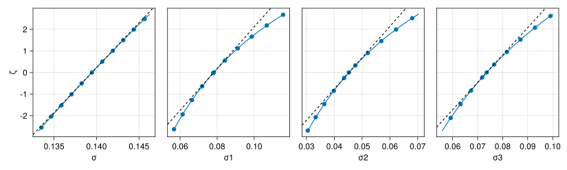

Code
using AlgebraOfGraphics
using CairoMakie
using MixedModels
using MixedModelsMakie
using Random
using SMLP2023: dataset
CairoMakie.activate!(; type="svg")
import ProgressMeter
ProgressMeter.ijulia_behavior(:clear)Statistical methods that are based on probability models can be used to provide us with a “best guess” of the value of parameters, such as the effect of a particular experimental treatment, in the form of a parameter estimate. In addition, the probability model can be used to assess the uncertainty in the estimate.
Often the information about the uncertainty is reduced to a single number, a p-value for a test of a null hypothesis, such as the effect being zero, versus the alternative of a non-zero effect. But quoting a single number from a model fit to experimental data, which may have required considerable effort and expense to obtain, will often mean discarding a considerable amount of the information in the data. In the days when computing was expensive and labor-intensive this may have been unavoidable. However, modern computing hardware and software systems provide us with the opportunity of much more intensive evaluation of the uncertainty. At a minimum, instead of focussing solely on the question of whether a coefficient could reasonably be zero, we can formulate confidence intervals on individual parameter estimates or confidence regions on groups of parameters.
We have seen the used of a parametric bootstrap to create a sample from the distribution of the estimators of the parameters, and how such samples can be used to create coverage intervals. The bootstrap is based on simulating response vectors from the model that has been fit to the observed data and refitting the same model to these simulated responses.
In this section we explore another approach based on refitting the model, keeping the same responses but holding one of the parameters fixed at a specified value.
Load the packages to be used
using AlgebraOfGraphics
using CairoMakie
using MixedModels
using MixedModelsMakie
using Random
using SMLP2023: dataset
CairoMakie.activate!(; type="svg")
import ProgressMeter
ProgressMeter.ijulia_behavior(:clear)Load the data and define the contrasts so that the coefficients for each of the experimental variables, load, spkr and prec, are positive.
contrasts = Dict( # base levels so estimates for speed are positive
:load => EffectsCoding(; base="yes"),
:prec => EffectsCoding(; base="break"),
:spkr => EffectsCoding(; base="old"),
)
kb07 = Table(dataset(:kb07))Table with 7 columns and 1789 rows:
subj item spkr prec load rt_trunc rt_raw
┌───────────────────────────────────────────────────
1 │ S030 I01 new break yes 2267 2267
2 │ S030 I02 old maintain no 3856 3856
3 │ S030 I03 old break no 1567 1567
4 │ S030 I04 new maintain no 1732 1732
5 │ S030 I05 new break no 2660 2660
6 │ S030 I06 old maintain yes 2763 2763
7 │ S030 I07 old break yes 3528 3528
8 │ S030 I08 new maintain yes 1741 1741
9 │ S030 I09 new break yes 3692 3692
10 │ S030 I10 old maintain no 1949 1949
11 │ S030 I11 old break no 2189 2189
12 │ S030 I12 new maintain no 2207 2207
13 │ S030 I13 new break no 2078 2078
14 │ S030 I14 old maintain yes 1901 1901
15 │ S030 I15 old break yes 4015 4015
16 │ S030 I16 new maintain yes 1880 1880
17 │ S030 I17 new break yes 1444 1444
18 │ S030 I18 old maintain no 1683 1683
19 │ S030 I19 old break no 2037 2037
20 │ S030 I20 new maintain no 1168 1168
21 │ S030 I21 new break no 1930 1930
22 │ S030 I22 old maintain yes 1843 1843
23 │ S030 I23 old break yes 4969 4969
⋮ │ ⋮ ⋮ ⋮ ⋮ ⋮ ⋮ ⋮Now we fit and profile a model. The response is defined as 1000 / rt_raw where rt_raw is measured in milliseconds. Thus the response being modeled is the speed measured in responses per second.
pr01 = let f = @formula 1000 / rt_raw ~
1 + load + spkr + prec + (1 + prec | item) + (1 | subj)
profile(fit(MixedModel, f, kb07; contrasts))
end
println(pr01.m) # model is a property of the profile objectMinimizing 67 Time: 0:00:00 ( 9.08 ms/it)Linear mixed model fit by maximum likelihood
:(1000 / rt_raw) ~ 1 + load + spkr + prec + (1 + prec | item) + (1 | subj)
logLik -2 logLik AIC AICc BIC
846.2869 -1692.5738 -1674.5738 -1674.4726 -1625.1691
Variance components:
Column Variance Std.Dev. Corr.
item (Intercept) 0.0061053 0.0781364
prec: maintain 0.0020476 0.0452502 -0.21
subj (Intercept) 0.0054186 0.0736113
Residual 0.0194484 0.1394577
Number of obs: 1789; levels of grouping factors: 32, 56
Fixed-effects parameters:
──────────────────────────────────────────────────────
Coef. Std. Error z Pr(>|z|)
──────────────────────────────────────────────────────
(Intercept) 0.531523 0.0172749 30.77 <1e-99
load: no 0.0212959 0.00329731 6.46 <1e-09
spkr: new 0.011218 0.00329732 3.40 0.0007
prec: maintain 0.0698293 0.00865212 8.07 <1e-15
──────────────────────────────────────────────────────Evaluation of pr01 is similar to other model fits in these notes except that the call to fit is wrapped in a call to profile. Because the object returned from profile includes the original model fit as its m property, it is not necessary to save the original model fit separately.
The information from the profile is encapsulated in a table.
pr01.tblTable with 15 columns and 249 rows:
p ζ β1 β2 β3 β4 σ ⋯
┌──────────────────────────────────────────────────────────────────────
1 │ σ -4.11624 0.531525 0.021298 0.0112154 0.0698319 0.130088 ⋯
2 │ σ -3.59106 0.531525 0.0212977 0.0112157 0.0698316 0.131224 ⋯
3 │ σ -3.06898 0.531524 0.0212975 0.011216 0.0698313 0.13237 ⋯
4 │ σ -2.54996 0.531524 0.0212972 0.0112164 0.069831 0.133526 ⋯
5 │ σ -2.03399 0.531524 0.021297 0.0112167 0.0698307 0.134692 ⋯
6 │ σ -1.52104 0.531524 0.0212967 0.011217 0.0698303 0.135868 ⋯
7 │ σ -1.01107 0.531523 0.0212964 0.0112173 0.06983 0.137054 ⋯
8 │ σ -0.504067 0.531523 0.0212961 0.0112177 0.0698297 0.138251 ⋯
9 │ σ 0.0 0.531523 0.0212959 0.011218 0.0698293 0.139458 ⋯
10 │ σ 0.501151 0.531523 0.0212956 0.0112184 0.069829 0.140675 ⋯
11 │ σ 0.999417 0.531522 0.0212953 0.0112187 0.0698286 0.141904 ⋯
12 │ σ 1.49482 0.531522 0.021295 0.0112191 0.0698282 0.143143 ⋯
13 │ σ 1.98739 0.531522 0.0212947 0.0112195 0.0698279 0.144392 ⋯
14 │ σ 2.47714 0.531521 0.0212944 0.0112199 0.0698275 0.145653 ⋯
15 │ σ 2.9641 0.531521 0.021294 0.0112202 0.0698271 0.146925 ⋯
16 │ σ 3.4483 0.531521 0.0212937 0.0112206 0.0698267 0.148208 ⋯
17 │ σ 3.92976 0.53152 0.0212934 0.011221 0.0698263 0.149502 ⋯
18 │ σ 4.4085 0.53152 0.0212931 0.0112214 0.0698259 0.150807 ⋯
19 │ β1 -4.15491 0.453786 0.0212914 0.0112175 0.0763354 0.139442 ⋯
20 │ β1 -3.75285 0.462423 0.0212917 0.0112177 0.0755102 0.139444 ⋯
21 │ β1 -3.33142 0.471061 0.0212921 0.0112179 0.0747192 0.139446 ⋯
22 │ β1 -2.89208 0.479698 0.0212926 0.0112181 0.0739651 0.139448 ⋯
23 │ β1 -2.43663 0.488335 0.0212931 0.0112182 0.0732385 0.13945 ⋯
⋮ │ ⋮ ⋮ ⋮ ⋮ ⋮ ⋮ ⋮ ⋱Each row of the table summarizes a fit of the original model to the original data but with one of the parameters held fixed. For the first 18 rows of the table, the parameter being held fixed is \(\sigma\), as shown in the p column. In the next set of rows the parameter being held fixed will be \(\beta_1\), the intercept.
There are blocks of rows for the fixed-effects (\(\boldsymbol{\beta}\)) parameters, the variance components (on the scale of a standard deviation), and the \(\boldsymbol{\theta}\) parameters that generate the covariance factor \(\boldsymbol{\Lambda}_{\boldsymbol{\theta}}\). (At present the correlation parameters are not profiled - we may add them later but that computation is rather awkward.)
show(unique(pr01.tbl.p))[:σ, :β1, :β2, :β3, :β4, :θ1, :θ2, :θ3, :θ4, :σ1, :σ2, :σ3]To reiterate, the first row contains the parameter estimates for this model fit to the original response values with the constraint that \(\sigma=0.130088\), instead of the global estimate \(\hat{\sigma}=0.139458\) in the row for which \(\zeta=0.0\).
The global estimates are included in every block at the row for which \(\zeta=0.0\).
filter(r -> iszero(r.ζ), pr01.tbl)Table with 15 columns and 12 rows:
p ζ β1 β2 β3 β4 σ σ1 ⋯
┌──────────────────────────────────────────────────────────────────────────
1 │ σ 0.0 0.531523 0.0212959 0.011218 0.0698293 0.139458 0.0781364 ⋯
2 │ β1 0.0 0.531523 0.0212959 0.011218 0.0698293 0.139458 0.0781364 ⋯
3 │ β2 0.0 0.531523 0.0212959 0.011218 0.0698293 0.139458 0.0781364 ⋯
4 │ β3 0.0 0.531523 0.0212959 0.011218 0.0698293 0.139458 0.0781364 ⋯
5 │ β4 0.0 0.531523 0.0212959 0.011218 0.0698293 0.139458 0.0781364 ⋯
6 │ θ1 0.0 0.531523 0.0212959 0.011218 0.0698293 0.139458 0.0781364 ⋯
7 │ θ2 0.0 0.531523 0.0212959 0.011218 0.0698293 0.139458 0.0781364 ⋯
8 │ θ3 0.0 0.531523 0.0212959 0.011218 0.0698293 0.139458 0.0781364 ⋯
9 │ θ4 0.0 0.531523 0.0212959 0.011218 0.0698293 0.139458 0.0781364 ⋯
10 │ σ1 0.0 0.531523 0.0212959 0.011218 0.0698293 0.139458 0.0781364 ⋯
11 │ σ2 0.0 0.531523 0.0212959 0.011218 0.0698293 0.139458 0.0781364 ⋯
12 │ σ3 0.0 0.531523 0.0212959 0.011218 0.0698293 0.139458 0.0781364 ⋯The \(\zeta\) column in this table is a measure of the quality of the fit from the parameters in each row, relative to the global parameter estimates, as measured by the change in the objective (negative twice the log-likelihood).
The minimum value for the objective is that at the global parameter estimates. The change in the objective when we constrain one parameter to a particular value has approximately a \(\chi^2\) distribution on 1 degree of freedom, which is the square of a standard normal distribution, \(\mathcal{Z}^2\). We can convert this change in the quality of the fit to the scale of the standard normal distribution by taking the signed square root, which is the square root of the change in the objective with the sign of \(\psi-\hat{\psi}\) where \(\psi\) represents the parameter being profiled. This is the value labelled \(\zeta\) in the table.
To review:
Each row in the table is the result of re-fitting the original model with the parameter in the p column held fixed at a particular value, as shown in the column for that parameter.
The \(\zeta\) column is the signed square root of the change in the objective from the global parameter estimates.
Thus in the block of rows where \(\sigma\) is held fixed, the \(\zeta\) values in rows for which \(\sigma<\hat\sigma\) are negative and those for which \(\sigma > \hat\sigma\) have positive values of \(\zeta\).
Rows in which \(\zeta=0.0\) are the global parameter estimates.
Figure 1 shows, for each of the fixed effects parameters, \(\zeta\) versus the parameter value.
zetaplot!(Figure(; resolution=(1200, 350)), pr01; ptyp='β')The lines on these panels are read like normal probability plots, i.e. QQ plots against a standard normal distribution. Those on the \(\beta_2\) and \(\beta_3\) panels are, to the resolution of the plot, straight lines which indicates that the estimators of those parameters are normally distributed over the region of interest.
The points in the \(\beta_1\) and \(\beta_4\) panels are slightly over-dispersed relative to the straight line, which means that the estimators of these parameters are distributed like a T-distribution with a moderate number of degrees of freedom.
The profile-\(\zeta\) function can be used to generate confidence intervals on the parameters
confint(pr01)DictTable with 3 columns and 8 rows:
par estimate lower upper
────┬─────────────────────────────────
β1 │ 0.531523 0.497103 0.565942
β2 │ 0.0212959 0.0148295 0.0277621
β3 │ 0.011218 0.00475174 0.0176844
β4 │ 0.0698293 0.0523046 0.0873562
σ │ 0.139458 0.13486 0.144322
σ1 │ 0.0781364 0.0612443 0.103257
σ2 │ 0.0452502 0.0338521 0.0618819
σ3 │ 0.0736113 0.0600844 0.0916852as shown in Figure 2, which shows the absolute value of \(\zeta\), which is simply the square root of the difference in the objective, versus the parameter being profiled.
zetaplot!(Figure(; resolution=(1200, 330)), pr01; ptyp='β', absv=true)The 95% confidence intervals are the second horizontal lines from the top in each panel, at 1.96 on the vertical scale.
zetaplot!(Figure(; resolution=(1200, 330)), pr01; ptyp='σ', absv=true)
Figure 3 shows similar confidence intervals on the parameters representing standard deviations as does Figure 4 for the \(\theta\) parameters.
zetaplot!(Figure(; resolution=(1200, 330)), pr01; ptyp='θ', absv=true)With two methods of assessing the variability in the parameter estimates — the parametric bootstrap and profiling the objective function — we should compare and contrast these approaches.
Profiling the objective has two main advantages:
Profiling is deterministic whereas the parametric bootstrap is stochastic because it is based on a random sample from the model at the estimated parameter values. Repeating the evaluation of the bootstrap intervals will result in slightly different end points for the coverage intervals. The variability in the end points is a function of the size of the bootstrap sample.
Generally profiling is faster than the bootstrap. In this example the profiling required fitting a reduced model to the data 237 times (249 rows in the table but 12 of these rows are repetitions of the global estimates). To obtain reasonable precision in a bootstrap usually requires thousands of samples.
The main advantage of the bootstrap is that any parameter or any function of the parameters, such as the predicted response at some setting of the experimental factors, can be evaluated and assessed from the sample. When doing so, however, it is necessary to work with large samples so as to avoid undesirable levels of sample re-use.
Because profiling different parameters requires customized code for each parameter type, it is more difficult to generalize this approach to different types of parameters or predictions. We have already mentioned that the correlation parameters are not profiled in the current version of the code.
For comparison with the profiling results, we create a table of 2500 bootstrap samples
Random.seed!(8765678)
samp01 = parametricbootstrap(2500, pr01.m; optsum_overrides=(; ftol_rel=1e-8))
confint(samp01)DictTable with 2 columns and 9 rows:
par lower upper
────┬──────────────────────
β1 │ 0.497384 0.562267
β2 │ 0.0147172 0.0274258
β3 │ 0.00481004 0.0169282
β4 │ 0.0524409 0.0857708
ρ1 │ -0.577499 0.183778
σ │ 0.134747 0.144354
σ1 │ 0.0587605 0.0986544
σ2 │ 0.0316108 0.0571327
σ3 │ 0.0572288 0.087862Comparing these intervals with those from the profile results shows that the intervals on the fixed-effects parameters from the two methods are quite similar. The intervals on \(\sigma\) from the two methods are quite similar but the bootstrap intervals on the other variance components are shifted to the left relative to those from the profiling results. The reason for this is because the bootstrap intervals are chosen to be the shortest intervals with the desired coverage. In a density that is skewed to the right, as these are, the shortest interval will be to the left of an interval with equal tail coverage, which is how the profile-based intervals are constructed.
The profile-\(\zeta\) function can be transformed to an equivalent density function which we plot in Figure 5, showing the skewness of the variance component parameters other than \(\sigma\).
profiledensity!(Figure(; resolution=(1200, 300)), pr01; share_y_scale=false)Alternatively we can see the skewness in the plots of \(\zeta\)
zetaplot!(Figure(; resolution=(1100, 330)), pr01; ptyp='σ')
The skewness is less obvious in Figure 7 because of the stochastic nature of the bootstrap sample and the kernel density estimators.
let pars=["σ", "σ1", "σ2", "σ3"]
draw(
data(samp01.tbl) *
mapping(
pars .=> "Variance component parameters";
color=dims(1) => renamer(pars),
) *
AlgebraOfGraphics.density()
)
end